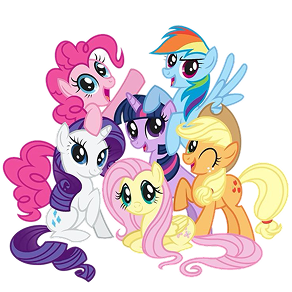
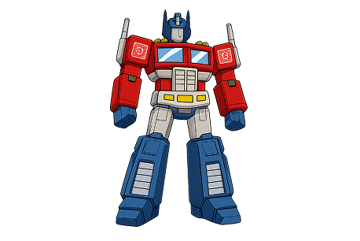
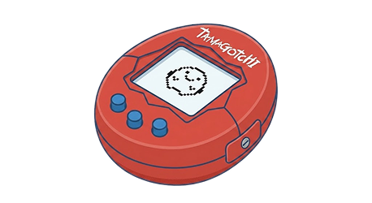
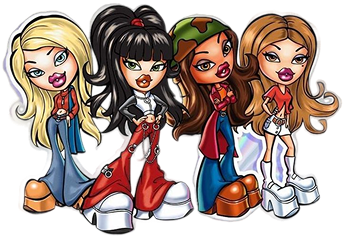

1980-Oggi
ERA DEI FENOMENI GLOBALI
Dagli anni '80 ad oggi, il giocattolo non è più solo un oggetto da tenere tra le mani: diventa il protagonista di serie TV, film campioni d'incasso e mondi virtuali infiniti. È l'epoca della cultura pop, dove un robot che si trasforma o un piccolo schermo tascabile possono scatenare manie collettive in tutto il pianeta.
In questi decenni abbiamo assistito a una rivoluzione tecnologica senza precedenti. I giocattoli hanno iniziato a "parlare", a "imparare" e a chiederci attenzione costante attraverso circuiti elettronici e pixel. Ma, sorprendentemente, in un mondo sempre più digitale, abbiamo riscoperto anche il piacere della tattilità: dalle sfide di abilità con trottole ad alta velocità, alla ricerca spasmodica di peluche ultra-morbidi e bambole piene di sorprese da scartare.
Oggi, giocare significa far parte di una comunità globale. Che si tratti di costruire universi digitali fatti di blocchi o di collezionare icone di stile, il giocattolo moderno riflette la nostra società: veloce, interconnessa e capace di reinventare costantemente i classici del passato con le tecnologie del futuro.
Lo sapevi? Alcuni dei giocattoli nati negli anni '80 sono diventati così preziosi da essere oggi ricercatissimi dai collezionisti adulti, dimostrando che non si è mai troppo grandi per giocare.




